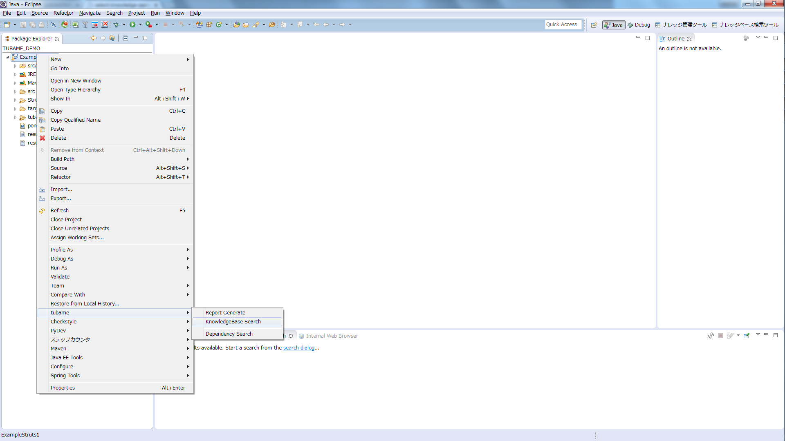
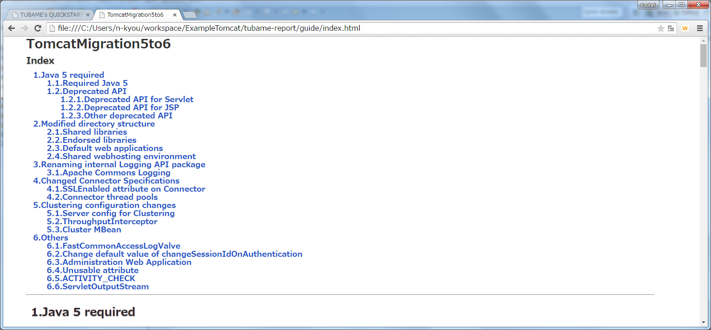

TUBAME install
Setting the TUBAME update site
http://tubame.github.io/tubame-eclipse-plugin-p2-site
Installing by selecting TUBAME
Knowledge-Based Search
Selecting Knowledge-Based Search
Selecting the eclipse project that contains the source application (source code, configuration files)
Importing of the migration knowledge
Example : Porting from Struts1 to SpringMVC
Executing the Knowledge-Based Search
The result of the Knowledge-Based Search
Display of search results (result.jbm file)
Display the extracted item list
Display detailed information of the extracted item
Display how to fix of the extracted item
Dependency Search
Preference
Example : Porting to Tomcat8 and SpringMVC
Selecting Dependency Search
Selecting the eclipse project that contains the source application (source code, configuration files)
Executing Dependency Search
The result of the Depencency Search
Display of search results (result.gjbm file)
Display the extracted item list
Report Generate（Tech Preview Features）
Selecting Report Generate
Selecting the eclipse project that contains the source application (source code, configuration files)

Executing Report Generate
Example : Using MVC Framework template
Display the report

Display Migration Guide
